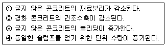
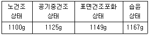
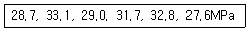
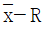
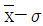
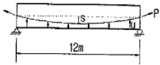
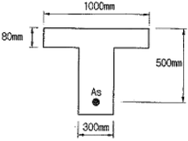
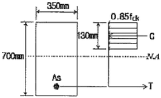

콘크리트산업기사 (2008-07-27 기출문제)
1과목: 콘크리트재료 및 배합
1. 한국산업규격 KS L 5110 시멘트 비중시험에 대한 다음 설명 중 틀린 것은?
- 포틀랜드 시멘트는 약 64g을 사용한다.
- 시멘트 비중병을 르샤틀리에 플라스크를 사용한다.
- 시멘트 비중시험시 시멘트를 넣은 비중병을 조금 기울여 굴리든가 또는 천천히 수평하게 돌려서 기포를 제거해야 한다.
- 시멘트 비중병에 시멘트를 넣기 전에 물을 투입해야 한다.
(정답률: 알수없음)

2. 한국산업규격 KS F 2560 콘크리트용 화학혼화제에 규정하고 있는 화학혼화제의 품질규정에 대한 설명으로 옳은 것은?
- 동결융해 저항성을 개선하기 위하여 사용되는 AE제의 재령 28일 압축 강도비는 110% 이상이 되도록 규정하고 있다.
- 콘크리트의 워커빌리티를 개선시키기 위하여 사용되는 감수제의 재령 28일 압축강도비는 110% 이상이 되도록 규정하고 있다.
- 콘크리트의 단위수량을 큰 폭으로 줄이기 위하여 사용되는 고성능 AE감수제의 감수율은 15% 이하가 되도록 규정하고 있다.
- AE제, 감수제, AE 감수제, 고성능 AE 감수제의 전체 알칼리양은 0.6㎏/m3 이하이어야 한다.
(정답률: 알수없음)
3. 콘크리트의 설계기준강도(fck)가 300MPa이고 압축강도의 표준편차(s)가 4MPa일 때, 배합강도(fcr)는 약 얼마로 하여야 하는가?
- 35.45MPa
- 35.82MPa
- 36.67MPa
- 37.51MPa
(정답률: 알수없음)
4. 콘크리트 표준시방서에 규정된 콘크리트용 부순 잔골재의 물리적 성질에 대한 품질 기준에 해당하지 않는 항목은?
- 마모율
- 안정성
- 절대 건조 밀도
- 0.08㎜체 통과량
(정답률: 알수없음)
5. 아래의 표에서 실리카 퓸을 사용한 콘크리트의 일반적 특성을 옳게 설명한 것을 모두 고른다면?

- ①, ③
- ①, ④
- ②, ③
- ②, ④
(정답률: 알수없음)
6. 골재에 대한 설명으로 옳지 않은 것은?
- 골재의 평균입경이 클수록 조립률은 커진다.
- 굵은골재의 최대치수는 질량비로 90% 이상을 통과시키는 체 중에서 최대치수의 체눈의 호칭치수로 나타낸 굵은골재의 치수를 말한다.
- 골재의 입형이 양호하고 입도분호가 적당하며, 실적률은 큰 값을 가진다.
- 골재의 표면건조 포화상태란 골재입자의 표면에 물은 없으나 내부에는 물이 꽉 차 있는 상태이다.
(정답률: 92%)
7. 시멘트의 분말도에 관한 설명 중 옳은 것은?
- 분말도가 작은 것일수록 물과 혼합시 접촉 표면적이 커서 수화작용이 빠르다.
- 분말도가 작은 것일수록 블리딩이 적고 워커블한 콘크리트가 얻어진다.
- 분말도가 높을수록 초기강도는 작으나 장기강도가 크게 된다.
- 분말도가 높을수록 풍화도기 쉽고 건조수축이 커져서 균열이 발생하기 쉽다.
(정답률: 알수없음)
8. 시멘트의 응결시간 시험 방법으로 옳은 것은?
- 오토클레이브 방법
- 비비시험
- 블레인시험
- 길모어 침에 의한 시험
(정답률: 알수없음)
9. 골재의 조립률을 계산할 때 적용되는 체눈의 크기가 아닌 것은?
- 40㎜
- 20㎜
- 1.2㎜
- 0.1㎜
(정답률: 알수없음)
10. 배합수에 대한 설명 중 옳지 않은 것은?
- 배합수는 콘크리트 용적의 약 15% 정도를 차지한다.
- 배합수는 콘크리트에 소요되는 유동성과 시멘트 수화반응에 관여한다.
- 배합수의 수질에 의심이 가는 경우에는 화학분석이나 모르타르의 시험을 실시할 필요가 있다.
- 레미콘의 슬러지수는 높은 알칼리성으로 인하여 어떠한 조작을 거치더라도 배합수로 사용이 불가능하다.
(정답률: 알수없음)
11. 다음 콘크리트의 시방배합을 현장배합으로 환산시 단위수량, 잔골재, 굵은골재량으로 적합한 것은? (단, 시방배합의 단위시멘트량이 300㎏/m3, 단위수량이 155㎏/m3, 단위 잔골재량이 695㎏/m3, 단위 굵은골재량이 1285㎏/m3이며 현장골재의 상태는 잔골재의 표면수 4.6%, 굵은골재의 표면수 0.8%, 잔골재 중 5㎜체 잔유량 3.4%, 굵은골재 중 5㎜체 통과량 4.3%이다.)
- 단위수량 : 114㎏/m3, 단위 잔골재량 : 691㎏/m3, 단위 굵은골재량 : 1330㎏/m3
- 단위수량 : 119㎏/m3, 단위 잔골재량 : 691㎏/m3, 단위 굵은골재량 : 1330㎏/m3
- 단위수량 : 114㎏/m3, 단위 잔골재량 : 721㎏/m3, 단위 굵은골재량 : 1303㎏/m3
- 단위수량 : 119㎏/m3, 단위 잔골재량 : 721㎏/m3, 단위 굵은골재량 : 1303㎏/m3
(정답률: 알수없음)
12. 아래와 같은 조건을 갖는 굵은골재의 표면건조 포화상태의 밀도(g/cm3)는? (단, 습윤질량 : 110g, 표면건조 포화상태 질량 : 100g, 건조 후 질량 : 90g, 수중질량 : 60g, 시험온도에서의 물의 밀도 : 1g/cm3)
- 3.33g/cm3
- 3.00g/cm3
- 2.65g/cm3
- 2.50g/cm3
(정답률: 29%)
13. 서중콘크리트 시공시, 레디믹스트 콘크리트의 운반거리가 멀 때, 수조 및 대형구조물 등 연속타설시 사용되는 콘크리트에 적합한 혼화제는?
- 공기연행 감수제
- 지연제
- 고성능 감수제
- 발포제
(정답률: 알수없음)
14. 배합설계에서 잔골재의 절대용적이 320ℓ, 굵은골재의 절대용적이 560ℓ 일 때, 잔골재율은 얼마인가?
- 36.4%
- 42.5%
- 57.1%
- 63.6%
(정답률: 60%)
15. 다음 중 수경성 시멘트모르타르의 인장강도 시험에 대한 내용으로 틀린 것은?
- 공시체 6개를 만들기 위한 표준모르타르의 배합에는 시멘트 150g, 표준 모래 368g이 필요하다.
- 공시체 성형 시는 각 공시체마다 두 손의 엄지손가락으로 78.4~98N의 힘으로 12번씩 전 면적에 걸쳐 힘이 미치도록 모르타르를 밀어 넣는다.
- 공시체의 수는 각 재령마다 3개 이상씩 만들어야 한다.
- 인장강도 시험 시 하중의 재하는 270±10㎏/min의 속도로 계속해서 부하한다.
(정답률: 알수없음)
16. 콘크리트 배합설계에서 단위수량을 선정하는 내용 중 잘못된 것은?
- 공기연행제 및 공기연행 감수제를 사용하면 단위수량이 감소된다.
- 쇄석을 굵은골재로 사용하면 강자갈의 경우보다 단위수량이 증가한다.
- 고로 슬래그의 굵은골재를 골재로 사용하면 강자갈의경우보다 단위수량이 감소된다.
- 소요의 워커빌리티 범위에서 가능한 단위수량이 적게 되도록 시험에 의해 정한다.
(정답률: 알수없음)
17. KS L 5201에 규정되어 있는 포틀랜드시멘트에 속하지 않는 것은?
- 중용열 포틀랜드 시멘트
- 저열 포틀랜드 시멘트
- 포틀랜드 포졸란 시멘트
- 조강 포틀랜드 시멘트
(정답률: 알수없음)
18. 잔골재의 함수상태를 계량한 값이 다음과 같을 때 흡수율을 구하면?

- 4.40%
- 4.45%
- 4.50%
- 4.55%
(정답률: 84%)
19. 포졸란 작용이 있는 혼화재가 아닌 것은?
- 규산질 미분말
- 규산백토
- 규조토
- 플라이 애시
(정답률: 알수없음)
20. 콘크리트 배합시 물-결합재비에 관한 설명 중 옳지 않은 것은?
- 물-결합재비는 소용의 강도, 내구성, 수밀성 및 균열저항성 등을 고려하여 정한다.
- 제빙화학제가 사용되는 콘크리트의 물-결합재비는 55% 이하로 하여야 한다.
- 콘크리트의 수밀성을 기준으로 물-결합재비를 정할 경우, 그 값은 50% 이하로 하여야 한다.
- 콘크리트 탄산화 저항성을 고려해야 하는 경우 물-결합재비는 55% 이하로 하여야한다.
(정답률: 알수없음)
2과목: 콘크리트제조, 시험 및 품질관리
21. 레디믹스트 콘크리트의 배합에서 각 재료의 1회 계량분량의 한계 오차로 올바르지 않은 것은?
- 시멘트 : ±1% 이내
- 골재 : ±4% 이내
- 물 : ±1% 이내
- 혼화재 : ±2% 이내
(정답률: 알수없음)
22. 콘크리트의 슬럼프 시험에서 몰드에 콘크리트를 3층으로 채우고 각각 다진 후 슬럼프콘을 들어올리는데 이 때 들어올리는 시간의 표준은?
- 2~3초
- 4~5초
- 6~7초
- 8~9초
(정답률: 알수없음)
23. 슬럼프 시험에서 다짐봉 중 콘크리트에 닿는 부분의 모양으로 옳은 것은?
- 뾰족할 것
- 평탄할 것
- 반구형일 것
- 오목할 것
(정답률: 알수없음)
24. 콘크리트의 받아들이기 품질검사 항목이 아닌 것은?
- 염화물이온량
- 슬럼프
- 공기량
- 타설검사
(정답률: 알수없음)
25. 굳지 않은 콘크리트의 공기량 시험방법의 종류가 아닌 것은?
- 질량법
- 압력법
- 용적법
- 증기법
(정답률: 알수없음)
26. 콘크리트의 중성화시험 측정시 사용되는 페놀프탈레인 용액의 농도는?
- 1%
- 2%
- 3%
- 4%
(정답률: 70%)
27. 초기재령 콘크리트에 발생하기 쉬운 균열의 원인이 아닌 것은?
- 소성수축
- 황산염반응
- 수화열
- 소성침하
(정답률: 알수없음)
28. S-N곡선은 콘크리트의 어떤 성질을 나타내는 것인가?
- 연성
- 피로
- 탄성계수
- 건조수축
(정답률: 알수없음)
29. 3등분점 휨강도시험에 사용되는 보 시편의 지간길이는 높이의 몇 배가 적당한가?
- 2.5배
- 3배
- 2.5배
- 4배
(정답률: 알수없음)
30. 원기둥 콘크리트 공시체(지름 150㎜, 길이 300㎜)를 할렬 인장강도시험을 하여 얻어진 최대 하중 150kN일 때, 이 콘크리트의 인장강도로 알맞은 것은?
- 3.1MPa
- 3.0MPa
- 2.4MPa
- 2.1MPa
(정답률: 알수없음)
31. 6회의 압축강도시험을 실시하여 아래 표와 같은 결과를 얻었다. 범위 R은 얼마인가?

- 5.1MPa
- 5.3MPa
- 5.5MPa
- 5.7MPa
(정답률: 알수없음)
32. 콘크리트 믹서 종류별 비비기 시간의 표준값에 대한 설명 중 맞는 것은? (단, 일반 콘크리트의 경우)
- 가경식 : 1분 30초 이상, 강제식 : 1분 이상
- 가경식 : 1분 30초 이상, 강제식 : 30초 이상
- 가경식 : 2분 이상, 강제식 ; 1분 이상
- 가경식 : 30초 이상, 강제식 : 1분 이상
(정답률: 알수없음)
33. 중성화의 깊이가 6.4㎝가 되려면 일반적인 경우에 있어서 소요되는 경과년수는 몇 년인가? (단, 중성화 속도 계수는 6이다.)
- 1.06년
- 1.14년
- 1.22년
- 1.30년
(정답률: 알수없음)
34. 콘크리트의 품질관리에 사용되는 관리도 중 계량값 관리도가 아닌 것은?
- x 관리도
- p 관리도

관리도
관리도
(정답률: 알수없음)
35. 콘크리트의 알칼리 골재반응에 대한 설명으로 옳은 것은?
- 고로 슬래그나 플라이 애시 시멘트와 같은 혼합시멘트를 사용하면 알칼리 골재반응의 억제에 효과가 있다.
- 골재를 세척하여 사용하면 알칼리 골재반응을 현저히 억제할 수 있다.
- 알칼리 골재반응을 억제하기 위해서는 나트륨이나 칼륨이온의 함량이 높은 시멘트를 사용하는 것이 좋다.
- 화강암 계열의 골재를 골재원으로 쓰는 경우 알칼리 골재반응이 진행될 가능성이 매우 높다.
(정답률: 알수없음)
36. 계수값 관리도에 의해 품질관리를 할 때 결점수 관리도에 적용되는 이론은?
- 정규 분포이론
- 이항 분포이론
- 카이자승 분포이론
- 푸아송 분포이론
(정답률: 알수없음)
37. 압축강도 시험의 일반적인 사항 중 적합하지 않은 것은?
- 공시체는 지름의 2배의 높이를 가진 원기둥형으로 한다.
- 재하속도는 0.06±0.04MPa 범위 내에서 한다.
- 공시체의 지름의 표준은 10㎝, 12.5㎝, 15㎝이다.
- 시멘트 캡핑을 할 경우에는 물-시멘트비가 27~30%인 시멘트 페이스트가 적당하다.
(정답률: 알수없음)
38. 플랜트에 고정믹서가 설치되어 있어 각 재료를 계량하고 혼합하여 완전히 비벼진 콘크리트를 트럭 믹서 또는 트럭 애지테이터에 투입하여 운반중에 교반하면서 지정된 공사현장까지 배달, 공급하는 콘크리트는?
- 쉬링트 믹스트 콘크리트
- 트랜싯 믹스트 콘크리트
- 센트럴 믹스트 콘크리트
- 프리 믹스트 콘크리트
(정답률: 알수없음)
39. 시멘트 분말도가 높은 경우에 일어나는 현상이 아닌 것은?
- 수화반응이 빨라진다.
- 발열량이 낮아지고 수축균열이 많이 생긴다.
- 응결 및 강도의 증진이 크다.
- 풍화되기 쉽다.
(정답률: 알수없음)
40. 일종의 재료 분리 현상으로써 굳지 않은 콘크리트나 모르타르에 있어서 물이 상승하는 현상을 무엇이라 하는가?
- 레이턴스(laitance)
- 슬럼프(slump)
- 마샬(Marshall)
- 블리딩(bleeding)
(정답률: 알수없음)
3과목: 콘크리트의 시공
41. 숏크리트 작업에서 발생하는 분진대책은 분진발생원 억제대책과 발생된 분진대책으로 구분할 수 있다. 이 중 분진발생원의 억제대책으로 옳은 것은?
- 환기에 의한 배출⋅희석
- 잔골재의 표면수율의 관리
- 집진장치의 설치
- 양호한 작업환경 보호
(정답률: 알수없음)
42. 굵은골재 최대치수가 25㎜인 골재를 사용한 해양콘크리트의 환경조건이 물보라지역 및 해상 대기중에 위치할 때 콘크리트의 내구성 확보를 위하여 정해지는 최소 단위 시멘트량은?
- 280㎏/m3
- 300㎏/m3
- 330㎏/m3
- 350㎏/m3
(정답률: 알수없음)
43. 콘크리트 표면 마무리에 대한 설명으로 틀린 것은?
- 마무리에 나무흙손을 사용하면 표면에 물이 모여들고 균열이 일어나기 쉬우므로 쇠 흙손이나 적절한 마무리기계를 사용해야 한다.
- 노출면에서 균일한 외관을 얻고자 할 경우 재료, 배합, 콘크리트 치기방법 등이 바뀌지 않도록 해야 한다.
- 마무리 작업 후 콘크리트가 굳기 시작할 때까지의 사이에 일어나는 균열은 다짐이나 재마무리에 의해 제거하여야 한다.
- 거푸집판에 접하는 면의 마무리를 쉽게 하고 충분히 양생하기 위하여 콘크리트가 소요의 강도에 도달한 후 되도록 빨리 거푸집판을 제거한다.
(정답률: 알수없음)
44. 일반적인 수중 콘크리트에 대한 설명으로 옳지 않은 것은?
- 트레미나 콘크리트 펌프에 의해 시공하는 경우 슬럼프는 130~180㎜ 범위를 표준으로 한다.
- 대규모 수중 콘크리트를 타설하는 경우 원칙적으로 밑열림 상자나 밑열림 포대를 사용한다.
- 일반 수중 콘크리트에서는 재료분리를 적게 하기 위하여 점성이 풍부한 배합으로 할 필요가 있다.
- 수중불분리성 콘크리트에서는 다짐이 불충분한 경우가 대부분이기 때문에 철근의 최소간격 조건이 엄격할 필요가 있다.
(정답률: 알수없음)
45. 경량골재콘크리트의 타설 및 다지기에 대한 설명으로 옳은 것은?
- 콘크리트를 타설할 때에는 경량골재콘크리트의 모르타르가 침하하고, 굵은골재가 위로 떠오르는 경향에 따라 재료분리가 발생한다.
- 내부진동기로 다질 때 그 유효범위는 보통골재 콜트리트에 비해서 크다.
- 내부진동기로 다질 때 보통골재콘크리트에 비해 진동시간을 짧게 하여야 한다.
- 초유동콘크리트 등과 같이 슬럼프 및 흐름값이 커서 다짐이 필요 없다고 판단되어도 다짐을 반드시 실시하여야 한다.
(정답률: 알수없음)
46. 한중콘크리트의 보온양생 방법이 아닌 것은?
- 급열양생
- 단열양생
- 피복양생
- 기건양생
(정답률: 46%)
47. 콘크리트 포장의 줄눈설치 목적과 관계가 먼 것은?
- 콘크리트 포장의 표층 슬래브 신축결함 보완
- 콘크리트 포장의 국부적 응력균열 발생제어
- 콘크리트 포장의 건조수축 균열제어
- 콘크리트 포장의 플라스틱 수축균열방지
(정답률: 알수없음)
48. 콘크리트 펌프를 이용하여 수중콘크리트를 타설할 때 배관선단 부분을 이미 타설된 콘크리트 속으로 묻어 넣어 콘크리트의 품질저하를 방지하여야 한다. 이 때 묻어 넣는 깊이로 가장 적절한 것은?
- 0.1~0.2m
- 0.3~0.5m
- 0.6~0.8m
- 0.9~1.1m
(정답률: 55%)
49. 연질 지반 위에 친 슬래브 등(내부 구속응력이 큰 경우)에서 내부온도가 최고일 때 내부와 표면적과의 온도차가 30℃ 발생하였다. 간이적인 방법에 의한 온도균열지수를 구하면?
- 2.0
- 1.5
- 10
- 0.5
(정답률: 알수없음)
50. 공사를 시작하기 전에 콘크리트의 운반에 대해 미리 충분한 계획을 수립하여야 하는데, 다음 중 계획수립의 검토사항으로 거리가 먼 것은?
- 콘크리트의 타설 순서
- 기상조건
- 시공이음의 위치
- 콘크리트의 강도
(정답률: 알수없음)
51. 고강도콘크리트에 대한 다음의 설명 중 틀린 것은?
- 굵은골재는 실적률 50% 이상, 안정성 18% 이하이어야 한다.
- 잔골재는 절건밀도 2.5g/cm3 이상, 염화물이온량은 0.02% 이하이어야 한다.
- 콘크리트 타설 낙하고는 1m 이하로 하며, 콘크리트는 재료 분리가 일어나지 않는 방법으로 취급하여야 한다.
- 고강도 콘크리트 설계기준강도는 일반적으로 40MPa 이상으로 한다.
(정답률: 알수없음)
52. 콘크리트를 다지면 물이 떠오름과 동시에 미세물질이 상승하게 되는데, 상승한 미세물질을 무엇이라 하는가?
- 블리딩(bleeding)
- 레이턴스(laitance)
- 허니콤(honey comb)
- 콜드 조인트(cold joint)
(정답률: 알수없음)
53. 미리 거푸집 속에 특정한 입도를 가지는 굵은골재를 먼저 투입한 후 골재와 골재 사이 빈틈에 시멘트모르타르를 주입하여 제작하는 방식의 콘크리트는?
- 진공콘크리트
- 프리플레이스트 콘크리트
- P.S콘크리트
- 수밀콘크리트
(정답률: 47%)
54. 다음 중 촉진 양생이 아닌 것은?
- 오토클레이브 양생
- 습윤양생
- 전기양생
- 증기양생
(정답률: 알수없음)
55. 다음 중 서중콘크리트의 설명으로 옳지 않은 것은?
- 하루 평균기온이 25℃를 초과하는 것이 예상되는 경우 서중콘크리트로 시공한다.
- 일반적으로 기온 10℃의 상승에 대하여 단위수량은 약 2~5% 정도 증가한다.
- 콘크리트 재료는 온도가 되도록 낮아지도록 하여 사용하여야 한다.
- 콘크리트를 타설할 때의 콘크리트 온도는 25℃ 이상이어야 한다.
(정답률: 알수없음)
56. 매스콘크리트에 대한 설명으로 옳지 않은 것은?
- 콘크리트의 발열량은 단위시멘트량에 비례하여 증가하기 때문에 가능한 단위시멘트량을 저감할 수 있도록 한다.
- 매스콘크리트에는 중요열 포틀랜드 시멘트나 고로 슬래그 시멘트 등의 저발열성의 시멘트가 유리하다.
- 매스콘크리트에 사용하는 혼화제는 촉진형 공기연행 감수제, 고성능 공기연행 감수제가 적당하다.
- 굵은골재의 최대크기가 클수록, 입도가 좋을수록 단위 시멘트량을 줄일 수 있어 온도상승량이 적어진다.
(정답률: 알수없음)
57. 다음 중 수밀콘크리트의 일반적인 사항으로 옳지 않은 것은?
- 수밀성이 큰 콘크리트 또는 투수정이 큰 콘크리트를 말한다.
- 물-결합재비는 55% 이하를 표준으로 한다.
- 연속타설 시간간격은 외기온이 25℃ 미만일 때는 90분 이내로 한다.
- 소요의 품질을 갖는 수밀콘크리트를 얻을 수 있도록 적당한 간격으로 시공이음을 둔다.
(정답률: 알수없음)
58. 콘크리트 공장제품에 관한 설명으로 옳지 않은 것은?
- 증기양생은 보통 비빈 후 2~3시간 이상 경과한 후에 실시한다.
- 공장제품의 성형에서 일반적으로 사용되고 있는 다지기 방법에는 진동다지기, 원심력다지기, 가압다지기, 진공다지기 및 이들을 병용하는 방법이 있다.
- PS강재에는 스터럽 또는 기와철근 등을 용접하지 않는 것을 원칙으로 한다.
- 프리스트레스트 콘크리트 제품에는 재생골재를 사용함을 원칙으로 한다.
(정답률: 알수없음)
59. 숏크리트에 대한 설명으로 틀린 것은?
- 절취면이 비교적 평활하고 넓은 벽면에 대해서는 세로방향으로 적당한 간격으로 신축줄눈을 설치하여야 한다.
- 뿜어 붙인 콘크리트가 박리되거나 흘러내리지 않는 범위의 적당한 두께로 뿜어 붙여소정의 두께가 될 때까지 반복해서 뿜어 붙여야 한다.
- 숏크리트는 빠르게 운반하고, 급결제를 첨가한 후는 바로뿜어 붙이기 작업을 실시하여야 한다.
- 비탈면이 동결하였거나 빙설이 있는 경우 표면에 물을 뿌려 시공한다.
(정답률: 알수없음)
60. 외력에 의하여 일어나는 응력을 소정의 한도까지 상쇄할 수 있도록 미리 인공적으로 그 응력의 분포와 크기를 정하여 내력을 준 콘크리트를 무엇이라 하는가?
- 프리플레이스트 콘크리트
- 진공콘크리트
- 프리캐스트 콘크리트
- 프리스트레스트 콘크리트
(정답률: 알수없음)
4과목: 콘크리트 구조 및 유지관리
61. 콘크리트 내의 철근은 외부로부터의 염화물 침투에 의해서 부식할 수 있다. 다음 중 철근의 부식에 미치는 영향이 가장 적은 것은?
- 콘크리트에 침투하는 염화물의 양
- 콘크리트의 침투성
- 콘크리트의 설계기준강도
- 습기와 산소의 양
(정답률: 알수없음)
62. 콘크리트의 동해로 인한 열화 발생시의 보수공법과 거리가 먼 것은?
- 표면보호공법
- 균열주입공법
- 단면복구공법
- 전기방식법
(정답률: 알수없음)
63. 폭 300㎜, 유효깊이 500㎜인 직사각형 보에서 콘크리트가 부담하는 전단강도(Vc)의 값으로 옳은 것은? (단, fck=24MPa, fy=350MPa이다)
- 95.3kN
- 104.7kN
- 110.2kN
- 122.5kN
(정답률: 34%)
64. 철근 부식이 의심스러운 경우 실시하는 비파괴검사 방법은?
- 초음파법
- 반발경도법
- 전자파 레이더법
- 자연전위법
(정답률: 알수없음)
65. 콘크리트 구조물의 재하 시험시 최종 잔류 측정값은 시험하중 제거 후 몇 시간 경과했을 때 읽어야 하는가?
- 1시간
- 6시간
- 12시간
- 24시간
(정답률: 64%)
66. 전기방식 공법에서 외부 전원을 필요로 하지 않는 공법은 어느 것인가?
- 티탄 메시방식
- 유전 양극방식
- 내부 양극방식
- 도전성 도료방식
(정답률: 알수없음)
67. 균열보수 공법 중 수동식 주입법의 특징으로 잘못된 것은?
- 다량의 수지를 단시간에 주입할 수 있다.
- 주입용 수지의 점도에 제약을 받지 않는다.
- 주입시 압력펌프를 필요로 한다.
- 주입기 조작이 간단하여 숙련공이 필요 없으며, 시공관리가 용이하다.
(정답률: 알수없음)
68. 그림의 PS콘크리트 보에서 하중평형개념을 고려할 때 등분포의 상향력 u는 얼마인가?(단, P=2000kN, s=0.2m이다.)

- 35.2kN/m
- 31.2kN/m
- 27.2kN/m
- 22.2kN/m
(정답률: 알수없음)
69. 콘크리트 보강방법의 하나인 연속섬유 시트접착공법을 적용하는 경우 얻어지는 일반적인 개선 효과에 해당되지 않는 것은?
- 콘크리트 압축강도 증진 효과
- 내식성 향상 효과
- 균열의 구속 효과
- 내하성능의 향상 효과
(정답률: 46%)
70. 그림과 같은 T형 단면에 3-D35(As=2870mm2)의 철근이 배근되었다면 등가 압축 응력의 깊이 a의 크기는? (단, fck=21MPa, fy=400MPa이다)

- 64.3㎜
- 80.0㎜
- 214.3㎜
- 266.7㎜
(정답률: 30%)
71. 다음의 콘크리트 구조물 열화를 평가할 때 사용하는 검사법 중 나머지 셋과 사용 목적 다른 것은?
- 반발경도법
- 인발법
- 전기저항법
- 코어강도시험
(정답률: 46%)
72. 단철근보에 하중이 재하됨과 동시에 탄성처짐이 20㎜ 생겼다. 이 하중이 지속적으로 작용할 때 추가로 생기는 장기처짐량은 얼마인가? (단, 하중은 5년 이상 지속적으로 재하된 것으로 본다)
- 20㎜
- 40㎜
- 60㎜
- 80㎜
(정답률: 알수없음)
73. 다음 중 옹벽을 설계할 때 고려해야 하는 안정조건이 아닌 것은?
- 전도에 대한 안정
- 활동에 대한 안정
- 지반 지지력에 대한 안정
- 벽체 좌굴에 대한 안정
(정답률: 알수없음)
74. 강도설계법에서 그림과 같은 단철근보에 대해 fck=24MPa이고, fy=400MPa이면 철근량 As는?

- 2320.5mm2
- 2520.5mm2
- 2720.5mm2
- 2920.5mm2
(정답률: 알수없음)
75. 철근콘크리트를 강도설계법으로 설계하고자 할 때 설계를 위한 가정에 대하여 틀린것은?
- 철근 및 콘크리트의 변형률은 중립축으로부터 거리에 비례한다.
- 콘크리트의 인장가도는 휨계산에서 무시하며, 압축응력은 0.85fck로 일정한 등가 직사각형 분포로 가정해도 좋다.
- 압축응력의 깊이는 압축연단에서 α=β1c로 계산되며, β1은 설계기준 강도가 28MPa보다 클 때에는 1MPa 증가할 때마다 0.007씩 증가시켜야 한다.
- 압축측 연단에서 콘크리트의 극한 변형률은 0.003이며, 철근의 응력은 항복강도(fy)에 해당하는 변형률보다 더 큰 변형률에 대해서도 항복강도(fy)를 사용한다.
(정답률: 알수없음)
76. P=2000kN의 수직 하중을 받는 독립 확대기초에서 허용 지지력 qa=250kN/m2일 때 기초 한 변의 최소 길이는 얼마인가? (단, 기초의 형상이 정사각형일 때)
- 2.83m
- 3.50m
- 4.15m
- 5.00m
(정답률: 알수없음)
77. 300㎜×400㎜의 단면을 가진 띠철근 기둥의 설계강도(øPn)는 얼마인가? (단, fck=24MPa, fy=300MPa, 종방향철근 전체의 단면적(Ast)은 5700mm2, ø=0.65)
- 2102kN
- 2829kN
- 3233kN
- 4042kN
(정답률: 알수없음)
78. 휨부재에서 fck=24MPa, fy=300MPa 일 때 D25(공칭직경 25.4㎜)인 인장철근의 기본정착길이는?
- 822㎜
- 934㎜
- 1024㎜
- 1143㎜
(정답률: 20%)
79. 콘크리트 균열이 깊이를 측정할 수 있는 시험방법으로 가장 적절한 것은?
- 반발경도법
- 초음파법
- 관입저항법
- Break-off법
(정답률: 알수없음)
80. 보수공법 중 표면 피복공벙에 관한 설명으로 옳지 않은 것은?
- 표면에 도료재를 발라 새로운 보호층을 형성시키고 철근 부식인자의 침입을 억제한다.
- 표면피복공법은 프라이머 도포, 바탕 조정, 바름 등의 공정으로 실시된다.
- 표면피복공법은 도장공법, 패널조립공법 및 매립거푸집공법 등이 있다.
- 보수 규모가 큰 경우에는 드라이 팩트 콘크리트 공법, 공법 등이 사용된다.
(정답률: 알수없음)
이유: 시멘트 비중시험은 시멘트의 비중을 측정하는 시험이다. 시멘트 비중병에 시멘트를 넣기 전에 물을 투입하는 이유는 시멘트가 공기 중에서 흡수한 수분을 제거하기 위해서이다. 시멘트가 수분을 흡수하면 비중이 높아지기 때문에 정확한 측정이 어렵다. 따라서 시멘트 비중병에 물을 먼저 넣고 시멘트를 넣어야 한다.